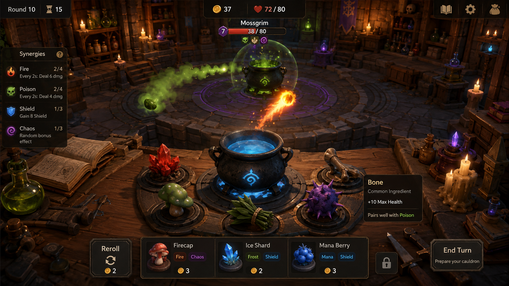

Licht und Materialien · Referenz und drei Kandidaten
Phase-1-Kamera, Geometrie, UI und Spielzustand bleiben gleich. Keine Variante ist ausgewählt oder veröffentlicht.
Werkbank · Desktop
Bilder anklicken für Originalgröße. Alle 36 Bilder sind echte, unretuschierte Spielaufnahmen. Kampfszenen sind über die Spielsteuerung pausiert, Idle-Bewegungen und Kerzen laufen weiter. Mobile ist Viewport-/Touch-Emulation, kein physischer Smartphone-Test. Auf kleinen Bildschirmen horizontal scrollen oder die 2 × 2-Anordnung wählen.
Performance-Hinweis: Die Bildtafeln zeigen Messungen ruhender Szenen. Im ersten aktiven Kampf wurden auch mit Referenzbeleuchtung Hänger von rund 3,4 Sekunden bestätigt. Das ist weiterhin offen; siehe Abnahmebericht und Wiederholungsmessung. Keine pauschale 60-FPS- oder Smartphone-Freigabe.
North-Star-Mockup als Zielreferenz
